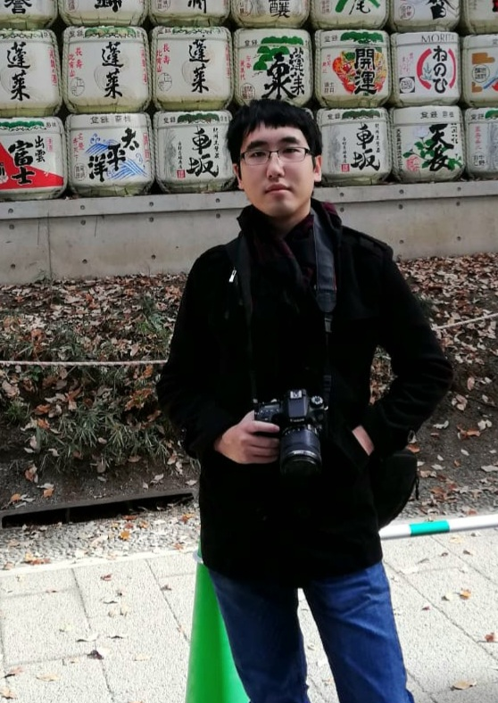

Faculty
Pratap Tokekar
Pratap Tokekar is an Associate Professor in the Department of Computer Science at the University of Maryland and an Amazon Scholar at Amazon Robotics. Between 2015 and 2019, he was an Assistant Professor at the Department of Electrical and Computer Engineering at Virginia Tech. Previously, he was a Postdoctoral Researcher at the GRASP lab of University of Pennsylvania. He obtained his Ph.D. in Computer Science from the University of Minnesota in 2014 and Bachelor of Technology degree in Electronics and Telecommunication from College of Engineering Pune, India in 2008. He is a recipient of the Amazon Research Award (2022), NSF CAREER award (2020), and CISE Research Initiation Initiative award (2016). He served as an Associate Editor for the IEEE Transactions on Robotics, and the ICRA and IROS Conference Editorial Board.
Current Members

Rui Liu
Ph.D. Student
Joshua McClellan
Ph.D. Student
Chak Lam Shek
Ph.D. Student
Anukriti Singh
Ph.D. StudentKasra Torshizi
Ph.D. StudentFormer Members
- Amisha Bhaskar, PhD (2026). First position: Applied Scientist at Amazon Robotics
- Peihong Yu, PhD (2025). First position: Senior ML Engineer at Xmotors.ai
- Troi Williams, Postdoctoral Fellow (2021–25).
- Vishnu Dutt Sharma, PhD (2024). First position: Nokia Bell Labs
- Harnaik Dhami, PhD (2024). First position: Autonomy Engineer at Shield AI
- Guangyao Shi, PhD (2023). First position: Postdoc at University of Southern California
- Maymoonah Toubeh, PhD (2023). First position: Research Assistant Professor at Virginia Tech National Security Institute
- Amrit Singh Bedi, Research Scientist (2022–23). First position: Assistant Professor at University of Central Florida
- Nare Karapetyan, Postdoc (2022–23). First position: Assistant Scientist at Woods Hole Oceanographic Institution
- Ahmad Bilal Asghar, Postdoc (2022–23). First position: Postdoctoral Fellow at the Army Research Lab
- Varun Suryan, PhD (2022). First position: Optimization Engineer at Kythera Space Solutions
- Zhongshun Zhang, PhD (2021). Current position: Senior Planning Algorithms Engineer at Bosch
- Kevin Yu, PhD (2021). First position: Senior Computer Engineer Robotics Researcher at SuperDroid Robots, Inc.
- Lifeng Zhou, PhD (2020). Current position: Assistant Professor at Drexel University
- Yoonchang Sung, PhD (2019). Current position: Assistant Professor at Nanyang Technological University, Singapore
- Khuzema Habib, M.Eng. (2026).
- Ruthwik Dasyam, M.Eng. (2025).
- Zahir Mahammad, M.Eng. (2025).
- Tianshu Xu, M.S. (2021). First position: Ernst & Young
- Deeksha Dixit, M.S. (2020). First position: Qualcomm
- Clay Mangette, M.S. (2020). First position: Lockheed Martin
- William Gerhard, M.S. (2019). First position: Aurora Flight Sciences
- Prajwal Shanthakumar, M.Eng (2018). First position: Continental Automotive
- Ashish Kumar Budhiraja, M.S. (2017). First position: Apple
- Nahush Gondhalekar, M.S. (2017). First position: Qualcomm
- Aravind Preshant Premkumar, M.S. (2017). First position: Apple